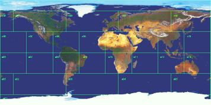

Let's take Earth, a size 5 world, as an example of what a world log really looks like. Its 26 environs are in two equal hemispheres of 13 environs each, so we can safely say that the outer edge of each hemisphere is the equator. If each environ is the same "height" --- the same distance in degrees of latitude from outer to inner ring --- then there are five environ heights from the equator on one side of the planet through the pole to the opposite side (two heights per ring, plus one for the polar environ). Such a path covers 180°, so each environ is 180/5 = 36° in height.
The "width" of each environ depends on which ring it's in. The outer ring has eight environs, so each one is 360/8 = 45° wide. The next ring in only has four environs, so each one is 90° wide. The polar environ is a special case; it's a circle with diameter 36°, or radius 18°.
The end result is shown below. Notice how environs n02 and n04 cover most of North America and northern Asia, respectively, and that only three environs (n06, s06, and s07) are completely free of any appreciable land. When you draw land contours on a world log, this map might be a good guide to just how big some features on the map will be.
|  |
Click here for a view of what this map looks like wrapped around a globe.